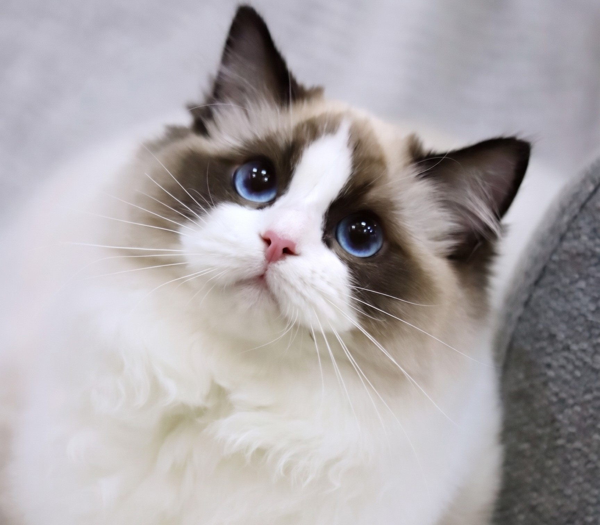

PURINA CATDEX
布偶貓 (Ragdoll)



Seal (海豹)
Blue (藍灰)
Chocolate (巧克力)
Lilac (丁香)
💡 提示：點擊「體重卡片」可切換 ♂️ / ♀️ 性別數據
概覽 Overview
布偶貓（Ragdoll）是大型長毛貓品種，以其深藍色的圓眼睛、柔軟長毛與極度親人溫和的性格著稱。牠們在被抱起時身體會放鬆宛如布偶一般，因而得名。
性格特徵 Temperament
布偶貓性格極其溫順、文靜且充滿耐性，喜歡隨時跟隨在主人身旁，非常適合與兒童及其他寵物家庭共同生活。
健康保養 Health & Care
需要定期梳理長毛以防結毛，並需注意心肌肥大症（HCM）的基因檢測與體重管理。
主糧推薦 Food Recommendation
推薦選用富含 Omega-3 與高品質蛋白質的 Purina Pro Plan 長毛貓配方，維持亮麗毛髮與健全肌肉發展。